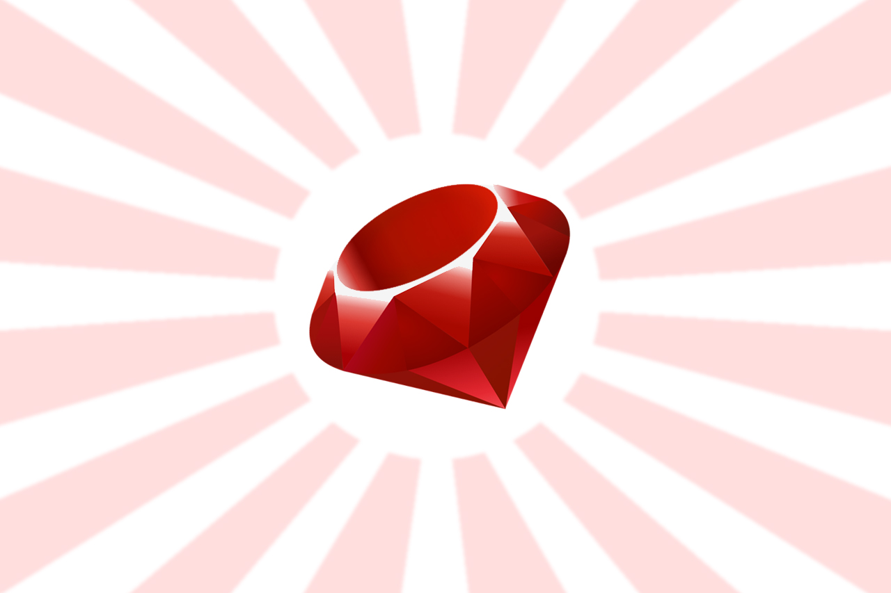

Introduction
This is a documentation on learning programming with Ruby created for Coding Curriculum project at University College London. This content is aimed at highschool students of age 15-18 but in theory in should be suitable for younger audience too.
Quick word about the authors
Hello there, we are Ashley, Zac, Artem and Tim and we study Computer Science at a fine institution known as University College London. Making this project was a part of our ENGS102P Design and Professional Skills module and we tried our best to come up with something interesting for you. We love coding (well, we do study Computer Science after all) and we want to share this passion with you. If you're still not sure whether you'd like to learn programming or not, read the section below and hopefully it will help you decide. We sincerely hope you will enjoy every single part of this tutorial!
Why bother learning to code?
First of all, coding is fun! This is pretty much the reason why we all got into coding when we were younger and no matter how much you code it becomes more and more fun with each new thing you learn.
On a more serious note, there are many benefits to learning how to program, here's a small list of them that will hopefully convince you that it is worth your time:
- Writing good code is all about approaching the problem at hand from a very logical point of view. The more programming you will do the better you will become at finding solutions to various problems, whether they are related to logic, maths or algorithms.
- With just the basic knowledge of some programming language you can save yourself time by automating different tasks in your daily routine, such as checking your mail, renaming photos according to the date they were taken or sorting documents on your computer.
- The programs you use on your computer every day have also been written in some way. Having some programming knowledge will help you better understand how exactly they work or why you experience certain problems. With enough enthusiasm you can even attempt to fix existing issues using the knowledge you have acquired!
There is a huge amount of other advantages to knowing how to code which you can find out about by doing a quick Google search. If you liked what you've heard so far, move on to the next section where we will tell you about the programming language we decided to teach you.
Our language of choice: Ruby

Ruby is an object-oriented language developed in 1990s. The main reason why we chose this language over a numerous amount of other languages was that it is one of the easiest programming languages to learn. Compared to more well-known languages such as Java and C++, Ruby requires way less lines of codes to achieve the same result and although this is not necessarily better, it is certainly helpful for beginners who had very little or no prior experience with coding.
Another notable benefit of learning Ruby is that at the moment there is a high demand for Ruby developers out there, so if you'll ever decide to extend your knowledge of Ruby further from what we've told you, you'll even be able to find a well-paying job as a Ruby developer.
Hopefully, everything you've read above have convinced that programming is definitely something worth getting into and that learning Ruby is a good starting point. Feel free to click the Next button to see how you can get started.